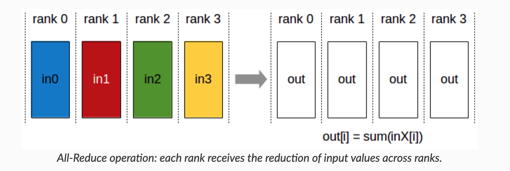
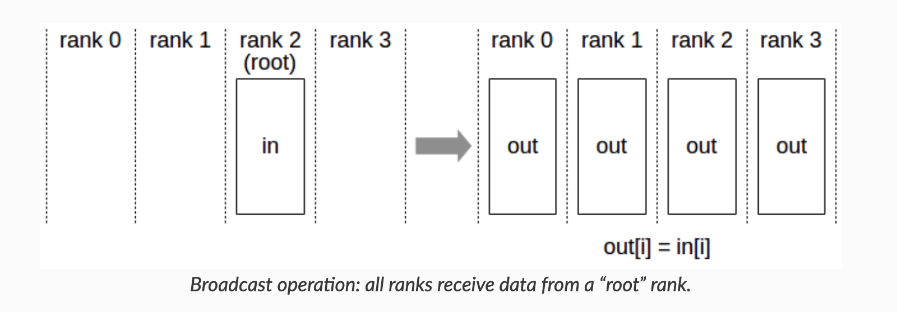
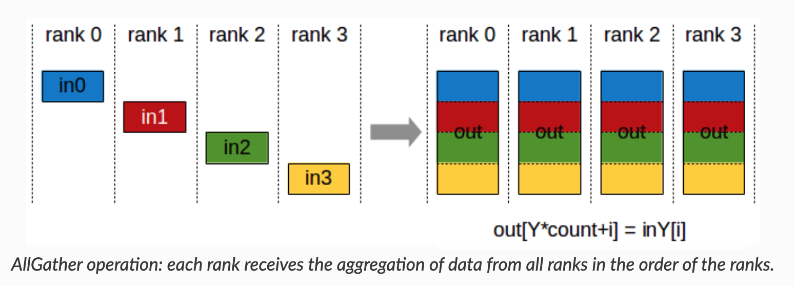
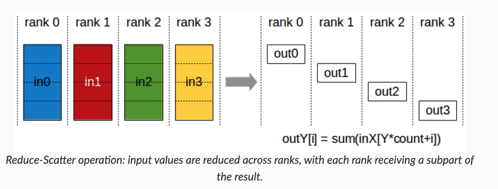
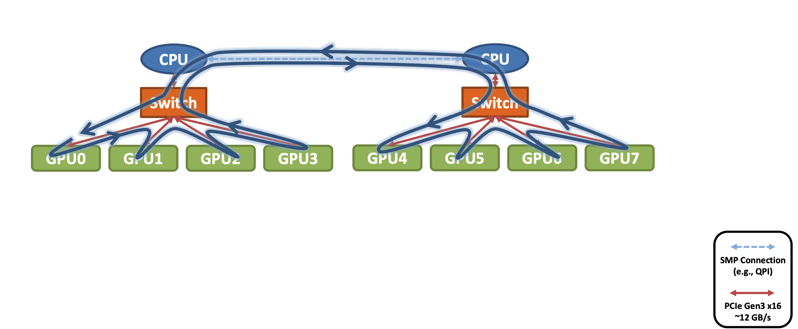

NCCL in SGLang
Before we discuss NVIDIA Collective Communication Library (NCCL) and communication in SGLang, we introduce the parallelism and general communication primitives.
Parallelism
In this section, we introcue the parallelism - TP, DP, PP. Generally we assume the communication data size should be TP > DP > PP. (Therefore we prefer to have inter-node PP but intra-node TP. You might want to reference _initialize_distributed in Megatron-LM for this, although it is not the key-point of this documentation.)
The figures are for training. But it still gives the rough idea of inference parallelism and why we need the communication operations included in the next section.
DP: Data Parallelism
The key idea is to distribute data on the replicated model of each GPU. We need to perform element-wise reduction across multiple GPUs (AR/AllReduce).
To reduce memory consumption, you might want to have a look at ZeRO.

(CMU-15442, 09-ML-Parallelization by Tianqi Chen)
TP: Tensor Parallelism
For $Y = XW$, we could have:

(CMU-15442, 10-ML-Parallelization by Tianqi Chen)
We would require communication to perform reduce operation.
PP: Pipeline Parallelism
The key iead is to improve resource utilization by pipelined sub-stages.

(Efficient Large-Scale Language Model Training on GPU Clusters Using Megatron-LM)
EP: Expert Parallelism

(TensorRT-LLM: https://nvidia.github.io/TensorRT-LLM/advanced/expert-parallelism.html)
Communication in NCCL
Primitives
NCCL provides the following collective communication primitives.
By these visualized representation with their names, you could get an intuitive understanding of their functions.
(https://docs.nvidia.com/deeplearning/nccl/user-guide/docs/usage/collectives.html)
AllReduce

ncclAllReduce()
Broadcast

ncclBroadcast()
Reduce
ncclReduce
AllGather

ncclAllGather()
ReduceScatter

ncclReduceScatter()
Also there are point-to-point send/recv for scatter, gather, and all-to-all operations. You can get how they works from their names.
How to Apply these Primitives on Network Topology?
To get a quick view, you might want to read this slide: https://images.nvidia.com/events/sc15/pdfs/NCCL-Woolley.pdf
Ring-based
NCCL_ALGO_RING

Tree-based
NCCL_ALGO_TREE
CollNet
NCCL_ALGO_COLLNET_CHAIN
NVLink-Shuffle
NCCL_ALGO_NVLS and NCCL_ALGO_NVLS_TREE
We can have a detailed look at the NCCL in the next section now.
What is NCCL
NCCL (NVIDIA Collective Communications Library) is a high-performance communication library developed by NVIDIA for GPU-to-GPU interactions.
NCCL addresses large model parallized training by:
- Enabling efficient data exchange in multi-GPU training
- Automatically identifying and optimizing communication topology between GPUs
- Providing standardized collective communication interfaces
- Supporting both intra-node (single-machine multi-GPU) and inter-node (multi-machine multi-GPU) communication
Key Concepts of NCCL
- Collective Operations: Supports operations like Broadcast, Reduction, Aggregation, AllReduce, AllGather, etc., for data synchronization across GPUs/nodes.
- Processes and Groups: Processes represent computational nodes participating in communication, organized into groups for collective operations.
- Communicators: Objects defining communication relationships between processes, specifying participant groups and modes (e.g., peer-to-peer, broadcast).
- Devices and Streams: Works with CUDA streams for asynchronous communication and parallel computation across GPUs.
- Synchronization: Provides synchronization primitives (e.g., barriers) to ensure consistent states during collective operations.
- Performance Optimization: Techniques like merged collective operations, batched data transfers, and computation-communication overlap.
- Fault Tolerance: Reliable communication despite node failures or network instability.
Supported Collective Operations
- AllReduce: Aggregate data across GPUs (e.g., sum) and broadcast results to all GPUs.
- Broadcast: Transmit data from a source GPU to all others.
- Reduce: Aggregate data to a single target GPU.
- AllGather: Gather data from all GPUs and distribute to all GPUs.
- ReduceScatter: Reduce data and scatter results across GPUs.
- Send/Recv: Peer-to-peer communication.
- AllToAll: Distribute data to all GPUs.
Hardware Requirements
- NVIDIA GPUs with CUDA support
- NVLink-enabled GPUs recommended for best performance
- InfiniBand or RoCE networks for multi-node communication
- Compatible CUDA and GPU driver versions
NCCL in PyTorch
PyTorch natively supports NCCL:
import torch.distributed as dist
# Initialize process group
dist.init_process_group(backend='nccl')
# Wrap model
model = torch.nn.parallel.DistributedDataParallel(model)
How NCCL Works
Ring Algorithm
Used for intra-node communication:
- Organize GPUs into a ring.
- Each GPU communicates only with adjacent neighbors.
- Global data exchange via multi-step transfers.
- Data split into chunks for parallel transfer.
Advantages:
- Maximizes GPU-to-GPU bandwidth
- Balanced communication load
- Scalable design
Tree Algorithm
(See postscript in torch-distributed notes.）
Communication Protocols
NCCL implements three protocols: 1. Simple: Basic protocol. 2. LL (Low Latency): Optimized for small payloads. 3. LL128: Optimized for NVLink, achieving 93.75% effective bandwidth.
NCCL vs. Other Libraries
- MPI Comparison: - NCCL: GPU-focused optimizations. - MPI: General-purpose but less optimized for GPUs. - Hybrid use: MPI manages processes, NCCL handles GPU communication.
- Gloo Comparison: - Gloo: Supports CPU/GPU. - NCCL: Outperforms in GPU scenarios.
Topology Optimization
Common NVIDIA Tools
Reference: WeLearnNLP Guide.
nvidia-smi topo -m
Compare two cluster topologies:
GPU0 GPU1 GPU2 GPU3 GPU4 GPU5 GPU6 GPU7 CPU Affinity NUMA Affinity GPU NUMA ID
GPU0 X SYS SYS SYS SYS SYS SYS SYS 0-15,32-47 0 N/A
GPU1 SYS X SYS SYS SYS SYS SYS SYS 0-15,32-47 0 N/A
GPU2 SYS SYS X SYS SYS SYS SYS SYS 0-15,32-47 0 N/A
GPU3 SYS SYS SYS X SYS SYS SYS SYS 0-15,32-47 0 N/A
GPU4 SYS SYS SYS SYS X SYS SYS SYS 16-31,48-63 1 N/A
GPU5 SYS SYS SYS SYS SYS X SYS SYS 16-31,48-63 1 N/A
GPU6 SYS SYS SYS SYS SYS SYS X SYS 16-31,48-63 1 N/A
GPU7 SYS SYS SYS SYS SYS SYS SYS X 16-31,48-63 1 N/A
Legend:
X = Self
SYS = Connection traversing PCIe as well as the SMP interconnect between NUMA nodes (e.g., QPI/UPI)
NODE = Connection traversing PCIe as well as the interconnect between PCIe Host Bridges within a NUMA node
PHB = Connection traversing PCIe as well as a PCIe Host Bridge (typically the CPU)
PXB = Connection traversing multiple PCIe bridges (without traversing the PCIe Host Bridge)
PIX = Connection traversing at most a single PCIe bridge
NV# = Connection traversing a bonded set of # NVLinks
GPU0 GPU1 GPU2 GPU3 GPU4 GPU5 GPU6 GPU7 CPU Affinity NUMA Affinity GPU NUMA ID
GPU0 X NV18 NV18 NV18 NV18 NV18 NV18 NV18 0-47,96-143 0 N/A
GPU1 NV18 X NV18 NV18 NV18 NV18 NV18 NV18 0-47,96-143 0 N/A
GPU2 NV18 NV18 X NV18 NV18 NV18 NV18 NV18 0-47,96-143 0 N/A
GPU3 NV18 NV18 NV18 X NV18 NV18 NV18 NV18 0-47,96-143 0 N/A
GPU4 NV18 NV18 NV18 NV18 X NV18 NV18 NV18 48-95,144-191 1 N/A
GPU5 NV18 NV18 NV18 NV18 NV18 X NV18 NV18 48-95,144-191 1 N/A
GPU6 NV18 NV18 NV18 NV18 NV18 NV18 X NV18 48-95,144-191 1 N/A
GPU7 NV18 NV18 NV18 NV18 NV18 NV18 NV18 X 48-95,144-191 1 N/A
Legend:
X = Self
SYS = Connection traversing PCIe as well as the SMP interconnect between NUMA nodes (e.g., QPI/UPI)
NODE = Connection traversing PCIe as well as the interconnect between PCIe Host Bridges within a NUMA node
PHB = Connection traversing PCIe as well as a PCIe Host Bridge (typically the CPU)
PXB = Connection traversing multiple PCIe bridges (without traversing the PCIe Host Bridge)
PIX = Connection traversing at most a single PCIe bridge
NV# = Connection traversing a bonded set of # NVLinks
Key Observations:
1. Interconnect:
- Cluster 1: PCIe + NUMA nodes (SYS)
- Cluster 2: NVLink (NV18) → Higher bandwidth/lower latency.
2. NUMA Architecture:
- GPU 0-3: NUMA node 0
- GPU 4-7: NUMA node 1
- Optimal task placement: Minimize cross-NUMA communication.
3. System Scale:
- Cluster 1: 64 CPU cores; Cluster 2: 192 cores.
4. Topology Completeness:
- Every GPU directly connects to all others
- Eliminates intermediate "hops," improving throughput.
NVLink Inspection
nvidia-smi nvlink --status -i 0
nvidia-smi nvlink --capabilities -i 0
Example Output (H100 GPUs)
GPU 0: NVIDIA H100 80GB HBM3
Link 0: 26.562 GB/s
... (18 links total)
All links support:
- Peer-to-peer (P2P) communication
- System memory access
- P2P/System atomics
- SLI support
Key Features: - Full bidirectional P2P support - High-speed atomics - System memory access
GPU Monitoring
Tool recommendation: nvitop
Install via pip install nvitop for real-time GPU metrics visualization.
SGLang Communication
References
- https://mlsyscourse.org/ CMU-15442 by Tianqi Chen
- https://docs.nvidia.com/deeplearning/nccl/user-guide/docs/index.html NCCL docs
- https://images.nvidia.com/events/sc15/pdfs/NCCL-Woolley.pdf NCCL talk
- https://nvidia.github.io/TensorRT-LLM/index.html TensorRT-LLM docs